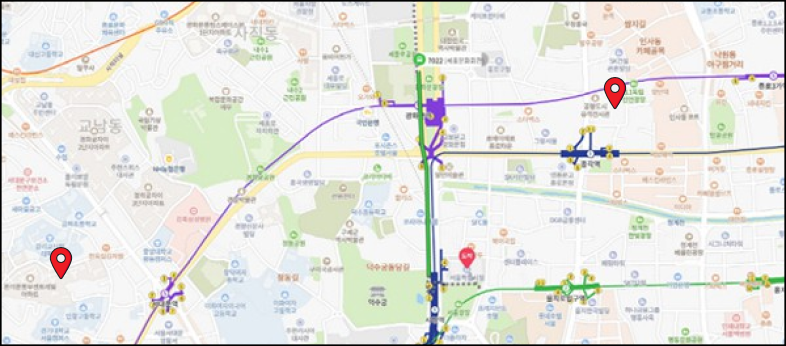

전통시장 플랫폼 제작의 이유
GET-COOL은 전통시장을 활성화하고자 하는 열정에서 출발했습니다. 제품을 사고 판매해서 사라지는 전통시장이 다시 활기를 찾게 합니다.
전통시장을 단순히 물건을 사고파는 곳이 아닌, 저희 시장상인들의 이야기, 손님들의 이야기가 담긴 공간입니다.
우리 목표는 잃어버린 전통시장의 활력을 디지털 시대에 맞게 재생해 더 많은 사람들이 전통시장을 찾을 수 있도록 돕고자 합니다.
저희와 함께하는 전통시장
GET-COOL에 가입한 시장은 현재 고양으로 향후에 추가될 예정에 있습니다.
